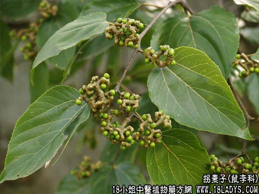

【中药大全】
拐枣子为鼠李科乔木植物拐枣带有肉质果柄的果实。甘、酸，归心、脾、胃经。
1．清热生津：用于热病心烦，口渴，呕吐，二便不利等，取本品10～25g，水煎服。
2．解酒毒：用于饮酒过度，有止渴除烦的功能，取本品20g，浓煎后代茶饮。
【药理作用】
对金黄色葡萄球菌、卡他球菌、绿脓杆菌、肠炎杆菌等有抑制作用。
【化学成分】
果实柄含多量葡萄糖、硝酸钾及苹果酸钾。
【用量用法】
本品9——30g，水煎服，或代茶饮。
本文解释权归中药大全，本文地址： https://www.daquan.com/post/1830.html